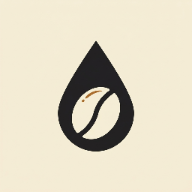

Pour slowly. Brew deeply.
今日の抽出を整える
抽出方法
{{ m.iconEl }}
{{ m.num }}
{{ m.name }}
{{ m.sub }}
{{ m.time }}
{{ selIconEl }}
{{ selNum }}
目安 {{ selTime }}
{{ selName }}
{{ selSub }}
{{ selDesc }}
{{ m.iconEl }}
{{ m.num }}
{{ m.name }}
{{ m.sub }}
{{ m.time }}
レシピ設定
{{ mIconEl }}
{{ mName }}
{{ mSub }}
コーヒー量
{{ doseVal }}g
比率
{{ ratioText }}
味の方向
前半の2投に反映
濃度
後半の投数に反映
Switch の開閉
HARIO Switch 系を想定
{{ r.time }}
{{ r.name }}
{{ r.chip }}
浸漬と透過を組み合わせる方式の目安です。2投目のあとに湯温を約70℃へ下げます。
注湯リズム
{{ neoPer }}g × 10投
30s
15s
15s
15s
…
1投目のあとは30秒待ち、2投目からは15秒ごとのリズムで注ぎ続けます。テンポと注湯量の正確さを優先します。
湯と氷
分けて管理
HOT（注湯）
{{ iceHot }}g
ICE（サーバー）
{{ iceIce }}g
氷はサーバーに先に入れます。タイマーの累計は注いだ湯量のみを表示し、氷は含めません。
レシピ概要
プレビュー
{{ rebrewLabel }}
{{ mIconEl }}
{{ mName }}
{{ mSub }}
レシピ概要
抽出ステップ
{{ pvStepCount }}
{{ st.time }}
{{ st.amt }}
{{ st.swLabel }}
{{ st.cumLabel }}
{{ st.cum }}
{{ pvDrawLabel }}
落ち切り目安
—
抽出前の確認
{{ bIconEl }}
{{ bName }}
{{ bSub }}
{{ bStepBig }}
{{ bStepSmall }}
{{ chipText }}
{{ timeText }}
今回の注湯
{{ curAmt }}g
{{ cumHeader }}
{{ curCum }}g
{{ curNote }}
{{ drawTitle }}
{{ drawSub }}
次
{{ nextTime }}
{{ nextAmtLabel }}
{{ nextTip }}
戻る
{{ pauseLabel }}
{{ nextLabel }}
抽出記録
{{ mName }}
{{ mIconEl }}
{{ mName }}
{{ mSub }}
評価
{{ rateLabel }}
テイスト
抽出の詳細
{{ e.label }}
{{ e.iconEl }}
{{ e.value }}
メモ
今回の味・気づき
次回の調整
次回変える条件
保存すると履歴に追加されます
履歴
抽出の記録
{{ histDecoIcon }}
最近の抽出
{{ featIconEl }}
{{ featName }}
{{ featSub }}
{{ featDate }}
テイスト
{{ t.label }}
前回のメモ
{{ featNote }}
抽出履歴
{{ h.iconEl }}
{{ h.name }}
{{ h.date }}
{{ h.meta }}
{{ h.ratingEl }}
{{ t.label }}
{{ histDecoIcon2 }}
記録はまだありません
一杯淹れて、最初の記録を残しましょう
記録の詳細
{{ dDate }}
{{ dIconEl }}
{{ dName }}
{{ dSub }}
評価
{{ dRateEl }}
次回の調整
{{ dNextNote }}
レシピ
{{ dFlavorLabel }}
{{ dStrengthLabel }}
抽出ステップ
{{ st.time }}
{{ st.amt }}
{{ st.swLabel }}
{{ st.cumLabel }}
{{ st.cum }}
テイスト
{{ t.label }}
メモ
{{ dNote }}
{{ e.label }}
{{ e.iconEl }}
{{ e.value }}
プレビューで確認してから開始します
設定
抽出環境を整える
デフォルト抽出
抽出方法
{{ defMethodVal }}
コーヒー量
{{ defDoseVal }}
比率
{{ defRatioVal }}
4:6 味の方向
{{ defFlavorVal }}
4:6 濃度
{{ defStrengthVal }}
抽出アシスト
{{ t.iconEl }}
{{ t.label }}
{{ t.sub }}
データ
{{ histCount }}件の記録
JSON でエクスポート
CSV でエクスポート
履歴を消去
アプリ情報

Pouro-Fable5 ・ Version 1.0
非公式の抽出ガイドです。各メソッドの考え方を参考にした、家庭での再現を目的とする目安値を提供します。
記録はこの端末内にのみ保存されます。アカウントや同期はありません。
ホーム画面に追加すると、アプリとして利用できます。
記録はこの端末内にのみ保存されます。アカウントや同期はありません。
ホーム画面に追加すると、アプリとして利用できます。
{{ toastText }}
履歴を消去しますか？
{{ clearCount }}件の記録をこの端末から削除します。
この操作は元に戻せません。
この操作は元に戻せません。